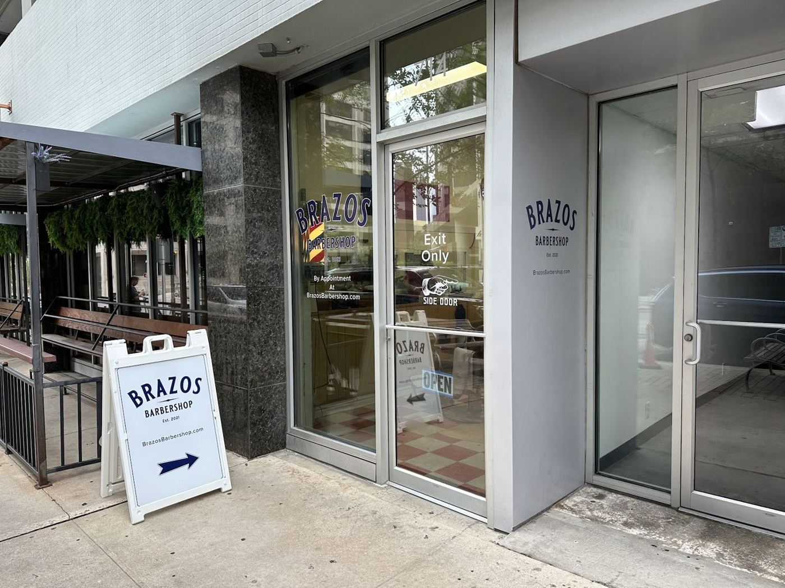
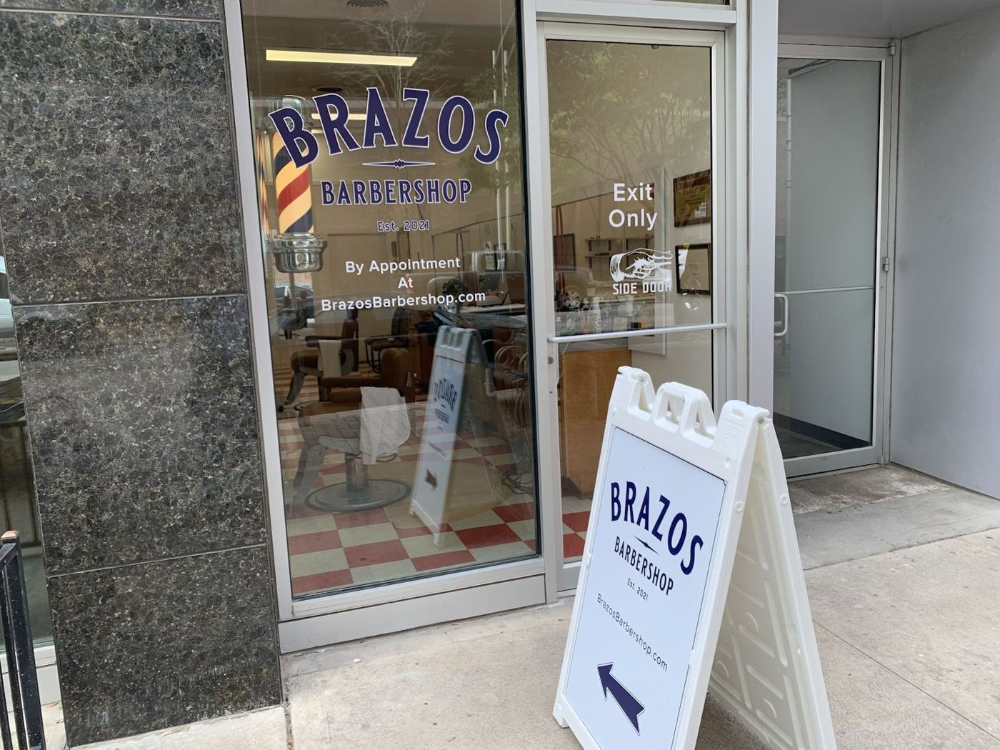
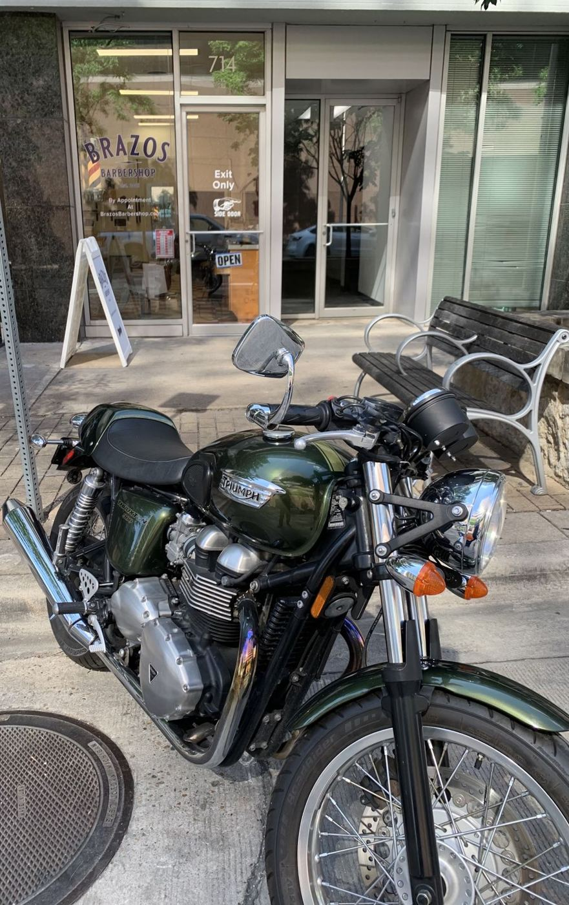
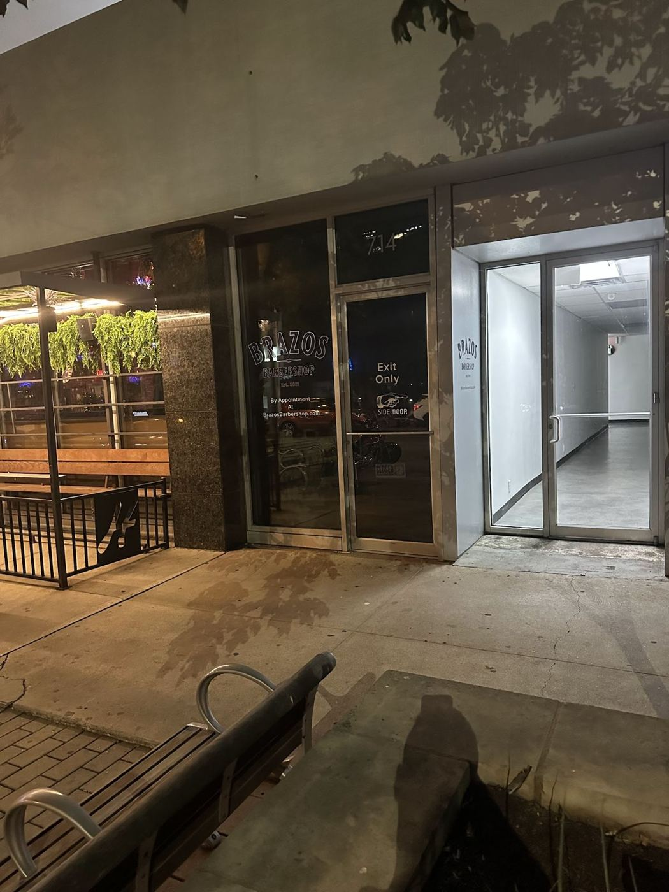
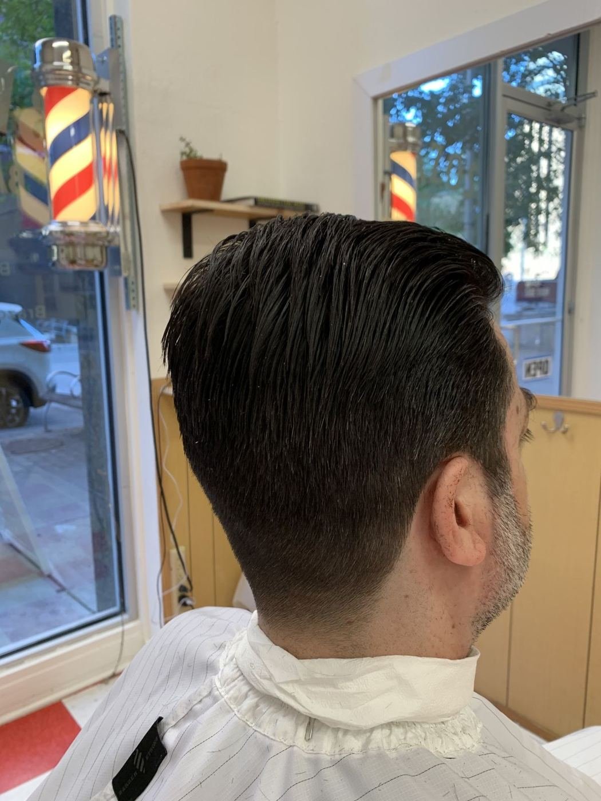
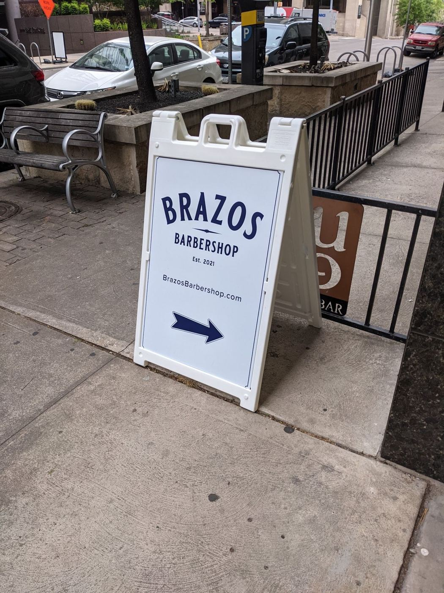

Downtown Austin · 714 Brazos St
Samegreatcut.

A small, traditional barbershop where the owners, Matt and Russell, are the ones cutting your hair.
4.9★ from 101 Google reviews
New ownership, same address. Matt and Russell own the shop and they are the ones cutting your hair, in a downtown spot that has been a barbershop for decades.
In the chair
| Classic haircuts | Consistent, detail-oriented cuts. Regulars say they walk out with the exact same cut every time. |
|---|---|
| Modern styles on request | Traditional at heart, but they blend in something more current when you ask. |
| Beard trims | A cut and a beard trim in a relaxing shop with mirrors all over. |
| Appointments | Book ahead. Same-day spots sometimes open up. |





“I have been coming to this shop for years. These guys do a great job, are very professional, and detail oriented. I have never been dissatisfied with either the haircut or the service.”